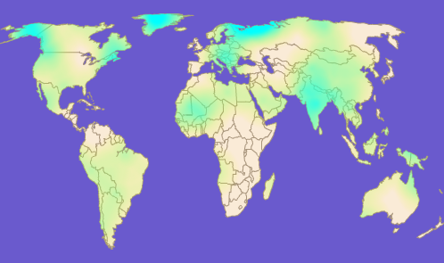

The
MapHeatMap control combines a heat map and a map control. It also provides
the ability to clip the heat map to the map. The map and the heat
map controls have to be set properly to get the
MapHeatMap control to work correctly. The
MapHeatMap control automatically sets the
dataFunction property to the default data function for the heat map which assumes
that the data provider provides objects with latitude/longitude coordinates.
The map and heat map components are provided as properties of the
MapHeatMap component as shown in the following example.
<?xml version="1.0" encoding="utf-8"?>
<mx:Application xmlns:mx="http://www.adobe.com/2006/mxml" layout="absolute" xmlns:ilog="http://www.ilog.com/2007/ilog/flex">
<mx:Script>
<![CDATA[
private function randomLongLat():Array {
var ret:Array = [];
for(var i:int = 0; i < 100; i++) {
var o:Object = new Object();
o.x = Math.random() * 360 - 180;
o.y = Math.random() * 180 - 90;
ret.push(o);
}
return ret;
}
]]>
</mx:Script>
<ilog:MapHeatMap width="400" height="200" clipToMap="true">
<ilog:map>
<ilog:WorldCountriesMap />
</ilog:map>
<ilog:heatMap>
<ilog:DensityHeatMap id="heatMap"
dataProvider="{randomLongLat()}"
pointSize="15" >
<ilog:colorModel>
<ilog:ColorModel>
<ilog:entries>
<ilog:ColorEntry color="0xffff00" limit="0" alpha="0"/>
<ilog:ColorEntry color="0x0fffff" limit="{heatMap.pointValue / 2}" alpha="0.5"/>
</ilog:entries>
</ilog:ColorModel>
</ilog:colorModel>
</ilog:DensityHeatMap>
</ilog:heatMap>
</ilog:MapHeatMap>
</mx:Application>
The following figure shows the resulting map of the world
plus
DensityHeatMap component filled randomly with latitude/longitude points.
